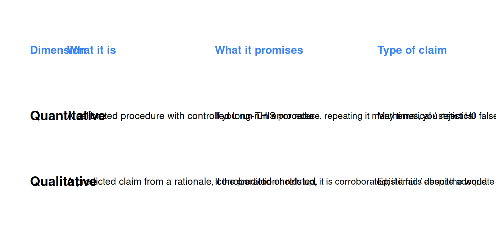

22 P-values, Fisher, and Neyman-Pearson
22.1 Where we are
Chapter 21 established the basic objects of statistical inference. We have a sample. The statistic we compute from that sample (a mean, a slope, a correlation) is one number out of many we could have gotten with a different sample. The collection of all those possible numbers is the sampling distribution, and its standard deviation is the standard error. With the Central Limit Theorem, we know what the sampling distribution looks like for most reasonable statistics: roughly normal, centered on the true population value, with a width quantified by the SE.
We are now ready to ask the question every researcher actually wants to answer: given my one sample, can I conclude that the effect I see is real in the population, or could it be a fluke?
That question has a longer and more contested history than most textbooks admit. Twentieth-century statistics produced two different answers, by two different teams of statisticians, that look superficially similar but are deeply different in what they promise and what they ask of you. Psychology and most empirical sciences inherited a strange hybrid of both, and a lot of the confusion around p-values that you encounter in research papers is due to that hybrid. This chapter walks you through:
- the question that motivated this work,
- Ronald Fisher’s approach: the p-value as a continuous measure of evidence,
- Jerzy Neyman and Egon Pearson’s approach: a decision procedure with calibrated long-run error rates, and the two distinct dimensions it carries,
- the hybrid psychology uses in practice,
- a precise definition of what a p-value is, and equally importantly what it is not, and
- the relevance of all this to the distinction between exploratory and confirmatory research.
The chapter is heavy on concepts and light on R code. The arithmetic is one short equation; the philosophy is everything.
22.2 The question that motivates everything
Recall the very last bit of Chapter 21. We fitted a regression of aggression on hours_weekly and read off a slope of about 0.082 with a standard error of about 0.027. The sampling distribution of slopes, in samples like ours, would be approximately normal, centered on the population slope, with a typical wobble of 0.027 around that center.
Now imagine the boldest possible version of the null hypothesis: the population slope is exactly zero. There is no relationship at all between gaming hours and aggression in the population. Every observed slope across hypothetical replications would be due purely to random sampling: sometimes a bit above zero, sometimes a bit below, never far from zero on average.
Even under that bold “nothing is happening” assumption, the slopes we would observe across replications would wobble around zero with an SD of 0.027. Sometimes we would get a slope of 0.01 by chance, sometimes -0.02, occasionally 0.05, very rarely 0.10. The slope could be 0.082 by chance, even if the true slope is exactly zero.
Our actual slope was 0.082. The question is then: under the assumption that the true slope is exactly zero, is 0.082 a plausible result that could have occurred by chance, or is it so far from zero that the “nothing is happening” assumption looks untenable?
This is the central question of statistical inference. It is what every test, every p-value, every “statistically significant” claim in every paper you will ever read tries to answer. The way different statisticians have proposed answering it gives us the two frameworks that fight for control of modern data analysis.
22.3 Fisher’s approach: the p-value as a measure of evidence
Ronald Fisher (1890-1962) was a British statistician who effectively invented modern statistics. Among many other contributions, he developed analysis of variance, maximum likelihood estimation, and the procedure that gave us the p-value as we know it. In 1925 he published Statistical Methods for Research Workers, which became the foundational textbook for applied statistics for decades.
Fisher’s intuition about how to test a hypothesis was clear and pragmatic. You start by entertaining the null hypothesis (which Fisher wrote as H₀): a default, deliberately boring claim about the population. The null is typically “no effect,” “no difference,” “no relationship.” For our running example: H₀ says the population slope of hours_weekly on aggression is zero.
Given H₀, ask this concrete question: if the null hypothesis were true, how surprising would my data be? If H₀ were true, what is the probability of observing a result at least as extreme as the one I actually got?
That probability is the p-value. A small p-value means the data are very surprising under the null. A large p-value means they are not surprising at all. The smaller the p-value, the more Fisher thought you should be reluctant to keep believing H₀.
Several features of Fisher’s view matter. They will come up again when we contrast it with the alternative framework.
The p-value is continuous, not categorical. Fisher treated p = .001 as more convincing evidence against the null than p = .04. There was no magical threshold at which the data suddenly “rejected” the null; the smaller p, the stronger the reluctance to accept H₀.
There is no alternative hypothesis. Fisher’s framework specifies only one hypothesis (the null) and asks how compatible the data are with that hypothesis. There is no competing claim being tested against it. This is sometimes called significance testing (the term Fisher used) to distinguish it from the later hypothesis-testing framework.
There is no automatic decision rule. Fisher famously refused to say “always reject if p < .05.” He treated the p-value as evidence to be combined with judgment, prior knowledge, and other studies. The famous α = .05 threshold is, in Fisher’s writing, a casually suggested convention, not a law.
It is a tool for the individual study. The p-value is computed for one study, and tells you something about that study’s evidence against the null. Fisher did not frame statistics around long-run error rates; he framed it around appraising a single body of evidence at a time.
Fisher’s analogy. Imagine someone shuffles a deck of cards and deals you a perfect royal flush. It is not impossible; a royal flush can happen in a fair shuffle. But it is very unlikely. The probability of that deal, under the assumption that the deck is fair, is very small. If you got that hand, you might reasonably start to suspect that the deck was not fairly shuffled. The p-value is like the probability of that deal. A very small probability under H₀ should make you reluctant to keep believing H₀.
Fisher himself, writing in 1956, described p-values not as probability claims about the world but as “a rational and well-defined measure of reluctance to the acceptance of the hypotheses they test” (quoted in Lakens, 2022, Chapter 1). The lower the p-value, the greater that reluctance. There is no formal threshold at which reluctance becomes rejection: Fisher’s p-value is a measure, not a decision rule. Lakens (2022) calls this view significance testing, in contrast to the hypothesis testing of Neyman and Pearson that we develop next. The two terms are often used interchangeably in textbooks, but they refer to importantly different conceptions of what statistical testing is for.
This is the Fisher view in one line: the p-value is a continuous measure of how surprising the data are under the null hypothesis.
22.4 Neyman and Pearson’s approach: a decision procedure with calibrated error rates
Jerzy Neyman (1894-1981) and Egon Pearson (1895-1980) were collaborators who, in the 1930s, developed an entirely different way of thinking about the same machinery. They built on Fisher’s ideas about p-values, but their purpose for those ideas was different.
Neyman and Pearson did not see statistics as a tool for measuring evidence at all. They saw it as a decision procedure. A researcher has to choose: do I act as if there is an effect, or do I act as if there is not? Every time the researcher decides, they could be wrong. The job of statistics is to design a procedure whose long-run error rate is controlled.
Their framework looks like this.
- Before you collect data, specify two hypotheses. The null (H₀: no effect) and an alternative (H₁: some specific effect). The alternative is not a vague “something is happening”; it is, ideally, a specific predicted value or direction.
- Before you collect data, choose an alpha level (α): the maximum probability you are willing to accept of falsely rejecting H₀ when it is actually true. The conventional choice is α = .05.
- Collect the data.
- Compute a test statistic and the corresponding p-value (the same number Fisher would compute).
- If p < α, reject H₀ and tentatively act as if H₁ is true. Otherwise, do not reject H₀ and tentatively act as if H₀ is true.
The justification for this procedure is the long-run error rate. If α = .05 and the null is true, the procedure will falsely reject H₀ in about 5% of all the studies you ever do over your career. The 5% is calibrated: it is a guaranteed long-run frequency of false positives, not a probability about any single study.
Several features distinguish this view sharply from Fisher’s.
It is binary. You reject H₀ or you do not. Under Neyman-Pearson there is no “almost significant,” no “marginally significant,” no continuous reading of strength of evidence. The decision is yes/no.
There is an alternative hypothesis. The procedure compares two specific candidate descriptions of the world, not just one. The alternative is what gives the procedure its power (Chapter 24 develops this).
α is set in advance. This is critical. Once you have the data, you cannot decide what α should be; α was your commitment before the data spoke. Otherwise the calibrated 5% rate is broken.
Individual results carry no weight. Neyman explicitly said you should not interpret one p-value as evidence in itself. What matters is that the procedure has known long-run error rates. A single decision might be right or wrong; the procedure as a whole behaves predictably across all its uses.
Neyman’s analogy. Picture a quality-control inspector on an assembly line. They examine items, decide “accept” or “reject,” and move on. Occasionally they accept a defective item (Type II error); occasionally they reject a good item (Type I error). They cannot eliminate errors. What they can do is design the inspection procedure so that its long-run error rates are acceptable: at most 5% bad items pass, at most 10% good items get rejected, or whatever is required. No single inspection proves anything; the procedure works because it is right most of the time.
The philosopher Zoltan Dienes summarizes the situation bluntly: the Neyman-Pearson framework, despite often being mistaken for Fisher’s, is, as he puts it, “the logic underlying all the statistics you see in the professional journals of psychology” (Dienes, 2008, quoted in Lakens 2022). When you see “p < .05” reported in a journal article, the calibration claim attached to that number, even if implicitly, is the Neyman-Pearson long-run-rate claim, not Fisher’s measure-of-evidence claim. The two are routinely conflated, but the actual reporting conventions of psychology come from Neyman and Pearson.
22.4.1 The two dimensions of the Neyman-Pearson framework
A subtle and important point that gets lost in many textbooks. The Neyman-Pearson framework is not really one thing; it is two things, sitting on top of each other, that need to be distinguished carefully.
Dimension 1: the quantitative procedure with calibrated error rates. This is the mathematical machinery: a pre-specified test, a pre-specified α, a pre-specified sample size, a fixed decision rule. The promise of this dimension is that if you run the procedure as specified, your long-run false-positive rate equals α. This is a guarantee about how the procedure behaves over many uses, not about any single result. It is statistical book-keeping in the most literal sense.
Dimension 2: the qualitative judgment of a predicted claim. Before you run the test, you have a hypothesis derived from some rationale: a theory, a literature, a piece of mechanism. The alternative hypothesis is the formal expression of that rationale. After the test, the decision (reject or not) maps onto whether the predicted claim is corroborated, refuted, or inconclusive. This second dimension is not statistical; it is epistemic. It is about whether a substantive claim about the world stood up to a test.
A study that runs through the Neyman-Pearson framework “correctly” uses both dimensions at once. There is a calibrated procedure (Dimension 1) and there is a predicted claim derived from a rationale (Dimension 2). When the test is run, you simultaneously make a calibrated decision and learn something epistemic about the claim.
These two dimensions can come apart, and this fact will matter a great deal in this chapter and the next.
| Dimension | What it is | What it promises | Type of claim |
|---|---|---|---|
| Quantitative | A calibrated procedure with controlled long-run error rates | If you run this procedure many times, you reject H₀ falsely about α of the time | Mathematical / statistical |
| Qualitative | A predicted claim from a rationale, corroborated or refuted by the result | If the prediction holds up despite adequate power to detect failure, it is corroborated; if it fails, it is refuted | Epistemic / about the world |
These two dimensions are separable. A study can satisfy Dimension 1 without engaging Dimension 2 at all (an exploratory test with no pre-specified prediction). Conversely, a study can have a precise predicted claim (Dimension 2) but break Dimension 1 by running the test on data that was already used to formulate the prediction. The four combinations of “satisfied or not” on each dimension generate four kinds of study, and recognizing which kind a given paper actually is, is the central interpretive task when reading research.
To make the framework concrete, consider these four scenarios.
Scenario A: confirmatory study. A researcher derives the prediction “violent video games increase aggression” from a theory of priming and desensitization. They commit before data collection to a single test (a two-sample t-test of aggression in violent vs neutral condition), an α level (.05), and a sample size justified by a power analysis. They run the experiment once. The result corroborates or refutes the predicted claim with calibrated error rates. Both dimensions are present and satisfied. This is the case the Neyman-Pearson framework was designed for.
Scenario B: exploratory study with a single test. A researcher receives a new dataset and runs a single test of “violent gaming vs aggression,” without a pre-specified prediction. The procedure is calibrated (the test is run as specified, no peeking, only one test). Dimension 1 is satisfied: the p-value has the meaning its formula claims, and the long-run false-positive rate is α. But there is no Dimension 2: no predicted claim was at stake, so the result is a discovery, an observation about this sample, not a confirmation of anything. This is fine if labeled honestly. The reader takes the result as suggestive and would want a separate confirmatory study to support it.
Scenario C: exploratory study with many tests, reported as one. A researcher runs twenty different tests on the dataset (different outcomes, different subgroups, different exclusion rules) and reports only the one with the smallest p-value, framed as if it had been the only test. Both dimensions are now broken. Dimension 1 is broken because the actual false-positive rate of the procedure is much higher than the reported α (we will derive how much higher in Chapter 25). Dimension 2 is broken because the reported “predicted claim” was not predicted at all; it was selected after seeing the data. This is the problematic case, and it is what most modern methodological work targets.
Scenario D: theoretically motivated study without calibration. A researcher has a clear predicted claim from theory (Dimension 2 present), but they peek at the data multiple times during collection, adjust the analysis based on what they see, or change the test after observing the result. Dimension 2 has not been violated in spirit, but Dimension 1 has been: the procedure was not run as specified, so the reported p-value does not have its calibrated meaning. The substantive claim might still be true; the statistical basis for believing it has been weakened.
The exercise of placing real studies into these four scenarios is one of the most useful things you can do as a critical reader of research. Scenarios A and B are both legitimate (when labeled honestly). Scenarios C and D are the failure modes that drive most of the methodological controversies in psychology, and we will return to them in Chapter 25.
22.5 The hybrid psychology uses, and what it gets wrong
Modern psychology, like most empirical sciences, uses neither pure Fisher nor pure Neyman-Pearson. It uses a sort of unconscious hybrid:
- We compute a p-value (a Fisher idea).
- We compare it to α = .05 (a Neyman-Pearson rule).
- We report “p < .05” as if it meant “statistically significant” (a Neyman-Pearson dichotomy).
- We also read the p-value continuously: a p of .001 feels more impressive than a p of .04 (a Fisher reading).
Each individual framework is internally consistent. The hybrid is not. Fisher’s framework permits no fixed threshold and reads the p-value continuously; Neyman-Pearson’s framework permits no continuous reading and treats the p-value only as “above or below α.” The hybrid takes the long-run error guarantee of Neyman-Pearson (which only works for a fixed, pre-committed procedure) and combines it with the post-hoc continuous reading of Fisher (which does not deliver calibrated error rates).
The result is something that looks like Neyman-Pearson at the surface (binary “significant / not significant” reporting, α = .05, “we reject H₀”) but acts like Fisher in practice (researchers try multiple analyses, choose what to report after seeing the data, treat .049 differently from .051). The result is a system that appears to have the calibrated error guarantees of Neyman-Pearson while routinely violating the conditions that those guarantees require. This is the source of most of the methodological crises that have shaken psychology over the last fifteen years.
We will not “fix” the hybrid in this chapter; doing so requires the discipline of pre-registration, which we will discuss in Chapter 25. For now, the point is to recognize the hybrid and to understand its components, so that when you read “p < .05” in a paper, you have the right vocabulary to ask what the authors actually did.
22.6 What a p-value is, precisely
Time to nail down a clean definition. A p-value is:
The probability of observing data at least as extreme as the data we actually observed, under the assumption that the null hypothesis is true.
Unpacking each piece carefully:
“Probability of the data.” Not the probability of the hypothesis. The p-value is a conditional probability that lives on the data side of the conditional, not on the hypothesis side. It assumes the null is true and asks what is the probability of seeing this much (or more) data.
“At least as extreme.” The p-value is not the probability of getting exactly our observed value; it is the probability of getting our value or anything more extreme. “More extreme” usually means farther from the null, in either direction (a two-tailed test) or in a specified direction (a one-tailed test).
“Given that the null is true.” This is a conditional. We are assuming the null. The p-value tells us how surprising our data are under that assumption. It says nothing about the probability that the null is actually true.
A picture clarifies what is going on. We are computing the tail area of the sampling distribution under H₀, beyond our observed value.
The curve is the sampling distribution of the statistic under H₀. The dashed vertical lines mark our observed value (and its mirror image on the other side of the null, for a two-tailed test). The red shaded area is the p-value: the probability, under H₀, of getting a result at least as extreme as ours, in either direction. A larger red area means a larger p-value, which means our data look unsurprising under H₀. A smaller red area means a smaller p-value, which means our data look surprising under H₀.
This picture is worth absorbing. It is what every two-tailed p-value in every paper is computing. The shape of the curve depends on the test (t, z, F, chi-squared, all coming in Chapter 23); the location of the observed value depends on the data; the shaded tail is what gets reported.
22.7 What a p-value is NOT
The most important thing to learn about p-values is what they are not. Five misconceptions show up repeatedly in published research, conference talks, and student work. Each is worth dissecting because each has a specific structural error.
22.7.1 Misconception 1: “A p of .03 means there is a 3% probability that the null is true”
This is wrong in the deepest possible way. The p-value is a probability about the data given the hypothesis. The probability that the null is true given the data is a completely different conditional probability, computable only with additional information (the prior probability of the null, which Bayesian methods make explicit).
These two probabilities can differ wildly. The probability that someone has four legs given that they are a cat is high. The probability that they are a cat given that they have four legs is much lower (most four-legged things are not cats). The direction of the conditional matters; reversing it gives the wrong answer.
This misconception is so common that it has a name: the inverse fallacy. P(data | H₀) is not the same as P(H₀ | data). The p-value gives you the first; nothing in null hypothesis testing gives you the second.
22.7.2 Misconception 2: “p = .001 means the effect is large and important”
The p-value reflects the size of the effect divided by the standard error. With a large enough sample, even a tiny effect will produce a tiny SE, and the p-value will be small. With a small sample, even a large effect will produce a big SE, and the p-value will be larger.
P-values therefore conflate effect size (how big the relationship is) and sample size (how precisely you measured it). A p of .001 tells you the data are very surprising under H₀; it does not tell you the effect is large. To say something about size, you need the effect size itself: the slope, the mean difference, Cohen’s d, the R-squared.
22.7.3 Misconception 3: “p = .06 is ‘almost significant’”
Under Neyman-Pearson, there is no “almost.” Either p < α and you reject, or p ≥ α and you do not. The α threshold is the rule; there are no near misses, no “trends toward significance.”
Under Fisher, p = .06 is somewhat less evidence than p = .04, but only slightly less; reading them as categorically different is a Neyman-Pearson move, and treating them as nearly identical is a Fisher move. The phrase “almost significant” is exactly the hybrid we criticized above: borrowing the binary threshold and then refusing to apply it cleanly.
A useful heuristic: when you see “marginally significant,” “approaching significance,” or “trending toward significance” in a paper, you are seeing a researcher trying to have it both ways. Both ways are not available.
22.7.4 Misconception 4: “p > .05 means the null is true”
This is just as wrong as misconception 1, and in fact is a consequence of it. Failing to reject the null does not confirm the null. It means your data are not surprising enough under H₀ to warrant rejecting it. The effect might still be real but small enough that your study lacked the power to detect it.
The Fisher / Neyman-Pearson framework is asymmetric. You can reject H₀ (with calibrated error rate α). You cannot directly accept H₀; you can only fail to reject it. The phrase “absence of evidence is not evidence of absence” captures this exactly. To make a positive claim that there is no effect, you need a different machinery: equivalence testing, which we will see in Chapter 24.
22.7.5 Misconception 5: “The p-value tells me the probability my result is due to chance”
This sounds reasonable but is built from the same confusion as misconception 1. “Probability my result is due to chance” is a probability about the hypothesis (that chance, i.e., H₀, generated the result). The p-value is a probability about the data conditional on the hypothesis. Reversing the conditional gives a different number that we did not compute.
Murphy et al. (2025) and Lakens (2022) document how often these misconceptions show up in published papers, even in good journals. The vocabulary is treacherous; precision matters.
22.8 Exploratory vs confirmatory: a first pass
We have now seen the philosophical structure of the Neyman-Pearson framework, including its two dimensions: the calibrated quantitative procedure and the corroborated/refuted qualitative claim. We can use this structure to understand a distinction that will recur for the rest of Section 4.
22.8.1 A confirmatory study
A confirmatory study has both dimensions. The researcher specifies a hypothesis derived from theory or prior work (Dimension 2: a predicted claim). They commit, in advance, to a single test, a sample size, an α, and a decision rule (Dimension 1: a calibrated procedure). Then they run the study, exactly once, exactly as specified. The result either corroborates or refutes the predicted claim, with calibrated error rates.
A confirmatory study delivers exactly what Neyman-Pearson promises: a calibrated decision about a substantive claim.
22.8.2 An exploratory study with a single test
Now consider a study where there is no prior hypothesis. The researcher has new data and wants to look. They run a test, get a p-value, and use it to make a decision (reject or do not reject H₀). They do all of this only once.
What does this study give us? It gives us Dimension 1 without Dimension 2. The procedure is still calibrated: if you ran exactly this single test on data where the null was true, you would falsely reject α of the time across many replications. The p-value is still a p-value in the full mathematical sense. There is no statistical impropriety.
But there is no Dimension 2. The researcher had no predicted claim to corroborate. The result tells you something about the data, but it does not have the same epistemic standing as a confirmatory result, because nothing was being tested in the Popperian sense of a prediction that could have failed. The single exploratory test is not a “confirmation” of anything, because there was no claim to confirm; it is a discovery, an observation, that needs to be tested again in a future, confirmatory study.
This is the crucial point that often gets lost. A single exploratory test, run as such and reported as such, is not wrong. It is not p-hacking. It does not give a misleading p-value. The error rates of the test are intact (Dimension 1). What is absent is the qualitative claim-corroboration (Dimension 2), and that is a feature of the study design, not a flaw in the statistics.
22.8.3 When exploratory becomes a problem
Exploratory analysis becomes a problem when many tests are run and only some are reported. Each individual test has its own error rate of α. But the probability that at least one of many tests gives a p < α just by chance grows quickly with the number of tests. If you run 20 independent tests at α = .05 on data where every null is true, the chance that at least one rejects is not 5%; it is about 64%. Chapter 25 will develop this alpha inflation point in detail.
When a researcher does a multi-test exploration and then reports only the significant tests as if they were the only thing being looked at, both dimensions break. Dimension 1 breaks because the actual long-run false-positive rate is much higher than the reported α (the reader assumed only one test was run; many were). Dimension 2 breaks because the reported claim was never predicted in advance; it was found post hoc.
This is not exploration being illegitimate. It is exploration being mislabeled as something else. The fix, which Chapter 25 will return to, is to maintain the distinction in the report: clearly label which analyses were pre-specified (confirmatory) and which were exploratory.
22.8.4 Where hypotheses come from
A natural question follows: if confirmatory analysis requires a predicted claim derived from a rationale, how do those predicted claims get made in the first place? They have to come from somewhere. The standard answer is theory; the realistic answer is theory plus prior data plus reasoning.
Mesquida, Warne, and Lakens (2025), in their paper What is your hypothesis?, develop this point in detail. They start from an observation: a great many published hypothesis tests do not, on close inspection, actually test the hypothesis the authors think they are testing. They identify five common misalignments between the stated hypothesis and the actual statistical procedure. Three of these misalignments produce situations where the stated hypothesis is in fact never tested at all (it is replaced by a different, weaker hypothesis); the other two inflate Type I and Type II errors above their stated rates. The result, in either case, is a paper that appears to deliver a calibrated decision about a substantive claim while actually doing something else.
The remedy they propose, drawing on a tradition from evidence-based medicine, is the PICO framework: a structured way to specify a hypothesis with enough precision that the corresponding statistical test can be derived unambiguously. PICO stands for:
- Population: who are the participants?
- Intervention or condition: what is being manipulated or measured?
- Comparator: against what comparison group or baseline?
- Outcome: what variable is measured, and on what scale?
A hypothesis stated in PICO form is concrete enough that there is one and only one statistical test that follows from it. Vague claims like “violent video games affect aggression” can be turned, via PICO, into precise testable hypotheses such as: in the population of 18-25 year-old gamers (P), playing a violent shooter for 30 minutes (I) compared to playing a non-violent puzzle game for 30 minutes (C) leads to a difference of at least 0.5 points in self-reported aggression on a 1-10 scale (O).
The Mesquida-Warne-Lakens paper is published in a sport-science venue (SportRxiv), but Daniel Lakens is a psychology methodologist at Eindhoven, and the misalignments they document are exactly the ones that show up in psychology. The PICO framework is equally applicable to psychological research. The paper is freely available and the example dissections of common misaligned hypotheses are worth reading.
The lesson for our purposes is twofold. First, hypotheses do not arrive ready-made for testing; turning a theoretical idea into a statistical hypothesis requires deliberate specification, and the absence of that specification is a major source of methodological problems. Second, the act of specifying a hypothesis in PICO form, before data collection, is itself a substantial discipline that protects the qualitative dimension (Dimension 2) of the Neyman-Pearson framework. We return to this in Chapter 25 when we discuss pre-registration.
In the older literature, this idea has been expressed in slightly different language. Lakens (2022, Chapter 1), drawing on the philosopher Carl Hempel (1966), describes confirmatory studies as relying on auxiliary hypotheses: the additional assumptions that must be true in order for the test to actually test the substantive claim. A study testing whether intergroup contact reduces prejudice has, as auxiliary hypotheses, that the contact-manipulation actually produced contact, that the prejudice measure actually measured prejudice, that participants were not aware of the experimental hypothesis, and so on. If any of these auxiliary hypotheses fails, the test does not test what we wanted it to test, regardless of the p-value. Pre-specifying a hypothesis in PICO form is one way to make these auxiliary commitments explicit and inspectable.
22.9 Looking ahead
Chapter 23 turns from the philosophy of p-values to the mechanics of computing them. To get from a sample value to a p-value, you need a test statistic (the sample value translated into standard-error units) and a reference distribution (the known shape of the sampling distribution under H₀: z, t, F, chi-squared). We will walk through all of those, and through the concept of degrees of freedom that controls the shape of the t and F distributions. By the end of Chapter 23 you will understand exactly what R is doing when it prints a p-value, and how to read the “t value” and “Pr(>|t|)” columns of summary(lm(...)) that we have been ignoring since Chapter 16.
Chapters 24 and 25 then take the decision-procedure dimension seriously. Chapter 24 develops Type I and Type II errors, power, and the Smallest Effect Size of Interest (SESOI), the missing anchor that gives “I had 80% power” any meaning at all. Chapter 25 returns to the exploratory/confirmatory distinction, develops alpha inflation and multiple-testing corrections, introduces Ioannidis’ positive predictive value, and lays out pre-registration as the practical discipline that lets researchers maintain Dimension 2 honestly.
22.10 Check your understanding
1. What is a p-value, precisely?
2. How did Fisher interpret the p-value?
3. What is the Neyman-Pearson framework for statistical testing?
4. The Neyman-Pearson framework can be described as having two dimensions. What are they?
5. How does psychology actually use p-values in practice?
6. A researcher reports “p = .03, so there is a 3% probability that the null hypothesis is true.” What is wrong with this statement?
7. Suppose a study reports “p = .001 indicates a large and practically important effect.” What does this statement get wrong?
8. What is the relationship between exploratory testing and the two dimensions of the Neyman-Pearson framework?
9. Why does exploratory testing become a methodological problem when many tests are run and only some are reported?
10. According to Mesquida, Warne, and Lakens (2025), where do hypotheses come from and why does the answer matter?
22.11 References
Dienes, Z. (2008). Understanding psychology as a science: An introduction to scientific and statistical inference. Palgrave Macmillan.
Fisher, R. A. (1956). Statistical methods and scientific inference. Oliver and Boyd.
Hempel, C. G. (1966). Philosophy of natural science. Prentice-Hall.
Lakens, D. (2022). Improving your statistical inferences. Chapter 1, “Using p-values to test a hypothesis.” https://lakens.github.io/statistical_inferences/01-pvalue.html
Mesquida, C., Warne, J., & Lakens, D. (2025). What is your hypothesis? On the importance of knowing your hypothesis before conducting a hypothesis test. SportRxiv. https://doi.org/10.51224/SRXIV.577
Murphy, S. L., Merz, R., Reimann, L.-E., & Fernández, A. (2025). Nonsignificance misinterpreted as an effect’s absence in psychology: Prevalence and temporal analyses. Royal Society Open Science, 12(3), 242167.
Navarro, D. J. (2018). Learning statistics with R: A tutorial for psychology students and other beginners (Version 0.6), Chapter 11 (“Hypothesis testing”). https://learningstatisticswithr.com